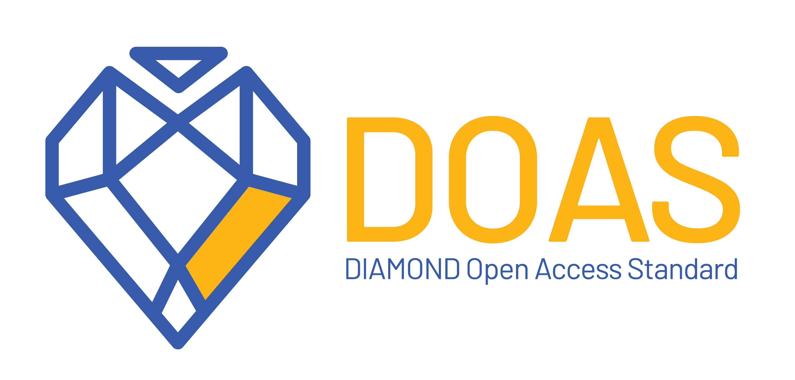

2025-04-22
Dokumentom Standard za dijamantski otvoreni pristup (Diamond open Access Standard – DOAS) utvrđuju se standardi u oblasti dijamantskog otvorenog pristupa koji pomažu naučnim izdavačima da obezbede kvalitet i transparentnost u izdavanju…
2025-04-21
Politike časopisa pružaju autorima jasne i transparentne informacije o profilu časopisa i uređivačkom procesu, a čitaocima, evaluatorima i indeksim bazama podataka pokazuju da su uređivačke prakse časopisa usklađene sa profesionalnim…

2025-04-21
Standard za dijamantski otvoreni pristup (DOAS) ( Diamond Open Access Standard ) je sveobuhvatan, višedimenzionalan okvir za procenu i unapređivanje kvaliteta časopisa prilagođen vrednostima i potrebama izdavaštva u dijamantskom otvorenom…